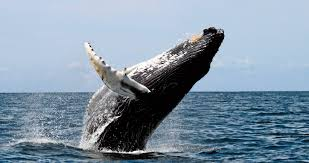
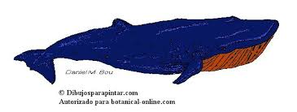
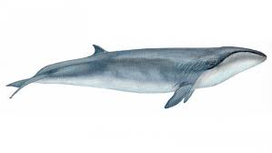
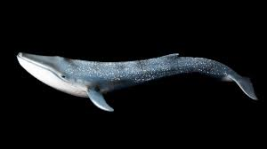

Celaceos
¿Que son los celaceos?
Los cetáceos son un grupo fascinante de mamíferos que se han adaptado completamente a la vida en el agua. Son conocidos comúnmente como ballenas, delfines y marsopas.
Características
Cuerpo hidrodinámico: Su cuerpo es alargado y fusiforme, lo que reduce la resistencia al agua y les permite nadar con gran eficiencia.
Aletas en lugar de patas: Sus extremidades anteriores se han transformado en aletas que les sirven para nadar y maniobrar. Las posteriores han desaparecido por completo.
Aletilla dorsal: La mayoría de los cetáceos tienen una aleta dorsal que les proporciona estabilidad al nadar.
Aleta caudal: Su aleta caudal es horizontal y se divide en dos lóbulos, lo que les permite propulsarse hacia adelante.
Gruesa capa de grasa: Esta capa, llamada blubber, les aísla térmicamente y les proporciona flotabilidad.
Respiración pulmonar: A pesar de vivir en el agua, los cetáceos necesitan subir a la superficie para respirar aire.
Ausencia de pelo: Su piel está casi desnuda, lo que reduce la fricción con el agua.
Ecoslocación: Muchos cetáceos, como los delfines y las orcas, utilizan la ecolocación para orientarse y localizar a sus presas. Emiten sonidos de alta frecuencia que rebotan en los objetos y les permiten crear una imagen mental de su entorno.
Cerebros grandes: Los cetáceos tienen cerebros relativamente grandes en comparación con el tamaño de su cuerpo, lo que sugiere una alta inteligencia.
Diversidad de especies: Existen más de 80 especies de cetáceos, con tamaños y formas muy variadas.
Clasificación
Los cetáceos se dividen en dos grupos principales:
Misticetos: Ballenas barbadas que se alimentan filtrando el agua a través de unas láminas llamadas barbas. Ejemplos: ballena azul, ballena jorobada.
Odontocetos: Ballenas dentadas que cazan activamente a sus presas. Ejemplos: orca, delfín común, cachalote.